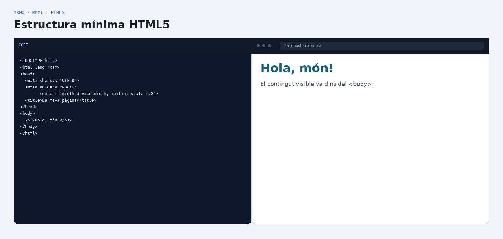
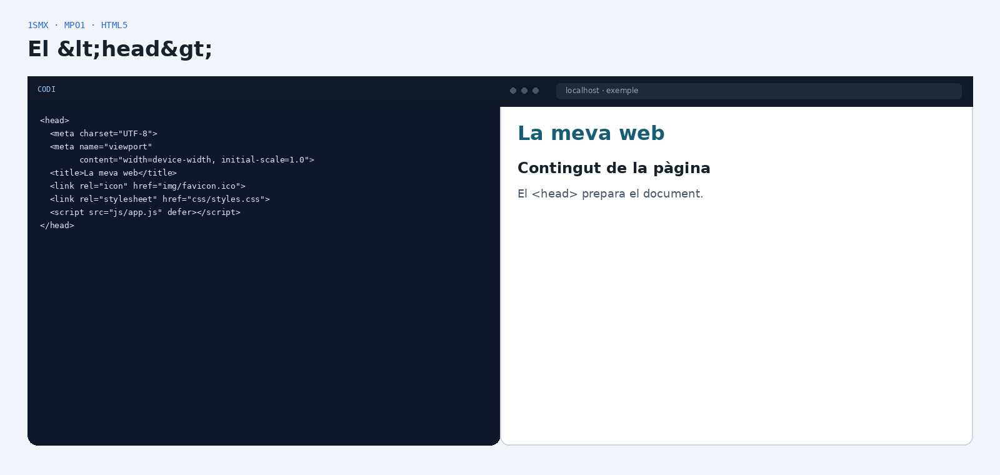
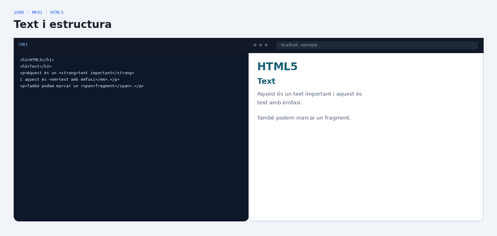
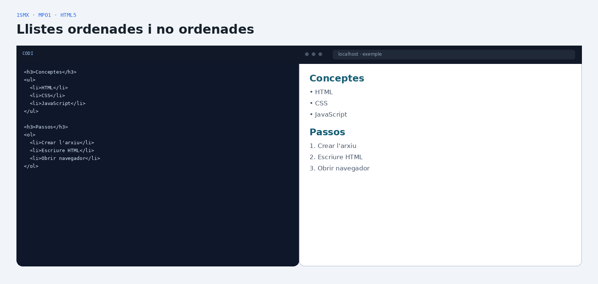
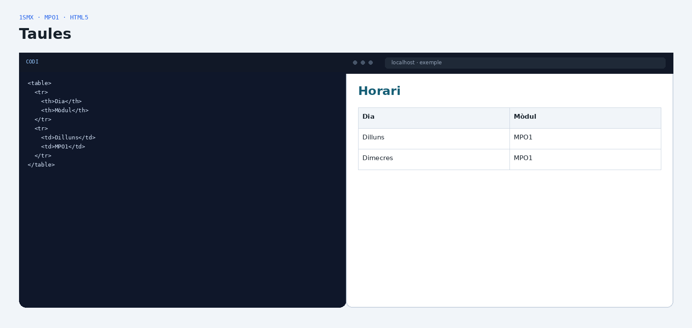
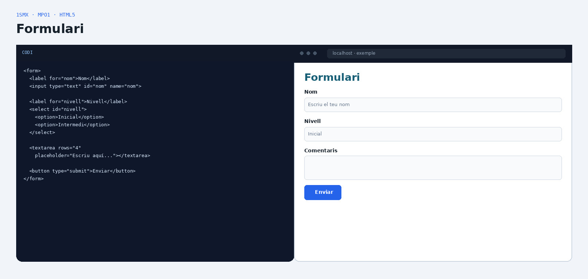
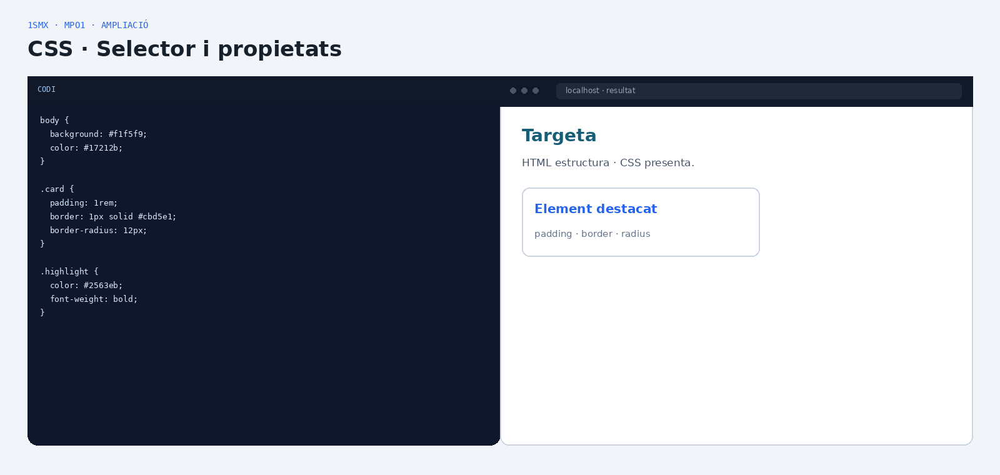
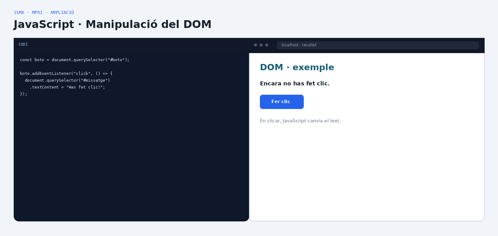
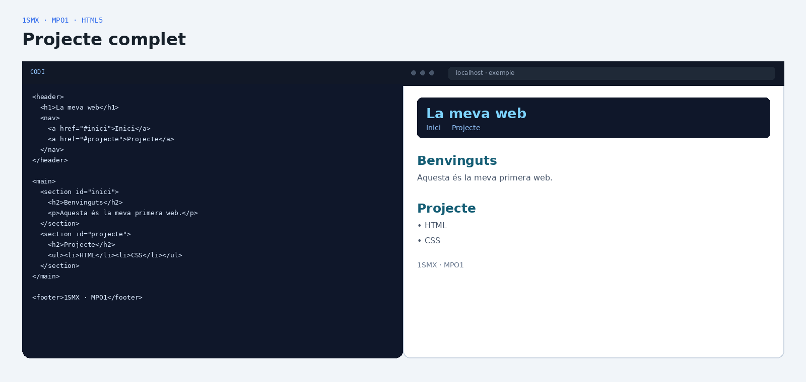

MPO1 · INTRODUCCIÓ A LA PROGRAMACIÓ
HTML5, CSS i una primera aproximació al DOM
Apunts visuals i progressius per començar a construir pàgines web amb una base sòlida: estructura, contingut, formularis, semàntica i estil.
HTML
Estructura
Defineix què és cada part del contingut.
CSS
Presentació
Controla colors, espais, tipografia i distribució.
JavaScript
Comportament
Afegeix interacció i permet manipular el DOM.
Base del material: document del mòdul MPO1 i apunts «Introducció a la programació. HTML5». Les ampliacions de CSS i JavaScript estan identificades com a ampliació.
02
Entorn de treball
Preparar l’eina abans d’escriure codi.
Visual Studio Code
El material de referència proposa Visual Studio Code i una sèrie de complements per facilitar l’escriptura, la validació i la previsualització.
- Spanish Language Pack
- HTML Hint
- Live Preview · Microsoft
- W3C Web Validator
- Save Typing
- Auto Rename Tag
- Live Server
# Ubuntu
snap install code --classic
# o bé
sudo snap install code --classic03
Estructura d’un document HTML5
La plantilla mínima que has de reconèixer de memòria.

Codi
<!DOCTYPE html>
<html lang="ca">
<head>
<meta charset="UTF-8">
<meta name="viewport"
content="width=device-width, initial-scale=1.0">
<title>La meva pàgina</title>
</head>
<body>
<h1>Hola, món!</h1>
</body>
</html>Hola, món!
El contingut visible va dins del <body>.
Idea clau:
<html> és l’arrel; <head> conté metadades i recursos; <body> conté el contingut visible.04
El <head>
Informació que el navegador necessita però que normalment no apareix com a contingut de la pàgina.
<meta charset="UTF-8">Defineix la codificació dels caràcters.
<meta name="viewport">Ajuda a adaptar la visualització a diferents dispositius.
<title>Text que apareix a la pestanya del navegador.
<link>Relaciona el document amb recursos com CSS o favicon.
<script>Permet incorporar JavaScript.

05
Text i estructura
Aprèn a donar significat al contingut abans de pensar en el disseny.
<h1> … <h6>Encapçalaments de diferents nivells.<p>Paràgraf.<strong>Importància / negreta visual habitual.<em>Èmfasi / cursiva visual habitual.<span>Fragment de text que pot rebre estil.<br>Salt de línia puntual.<hr>Separació temàtica visual.<div>Contenidor genèric per agrupar contingut.
Consell: fes servir
<p> per separar paràgrafs. El material de referència recomana evitar utilitzar molts <br> per estructurar el text.06
Llistes
Dos tipus bàsics i una mateixa etiqueta per als elements.
Llista no ordenada
<ul>
<li>HTML</li>
<li>CSS</li>
<li>JavaScript</li>
</ul>- HTML
- CSS
- JavaScript
Llista ordenada
<ol>
<li>Crear l’arxiu</li>
<li>Escriure HTML</li>
<li>Obrir navegador</li>
</ol>- Crear l’arxiu
- Escriure HTML
- Obrir navegador

07
Enllaços i imatges
Connectar documents i incorporar recursos visuals.
Enllaç + imatge
<a href="https://example.com"
target="_blank">
Visita la web
</a>
<a href="mailto:info@example.com">
Escriu-nos
</a>
<img src="img/thico.png"
alt="Institut Thos i Codina">Rutes relatives: el material recomana utilitzar rutes relatives per a enllaços i imatges, evitant començar amb
/.Fragment intern:
href="#id" permet saltar a un element que tingui aquell id.08
Taules
Representar dades en files i cel·les.

Codi
<table>
<tr>
<th>Dia</th>
<th>Mòdul</th>
</tr>
<tr>
<td>Dilluns</td>
<td>MPO1</td>
</tr>
</table>| Dia | Mòdul |
|---|---|
| Dilluns | MPO1 |
| Dimecres | MPO1 |
<table>Taula<tr>Fila<td>Cel·la de dades<th>Cel·la d’encapçalamentFusionar cel·les:
colspan fusiona columnes i rowspan fusiona files.09
Formularis
Recollir informació i permetre la interacció de l’usuari.

<label for="nom">Nom</label>
<input type="text"
id="nom"
name="nom">
<label for="nivell">Nivell</label>
<select id="nivell">
<option>Inicial</option>
<option>Intermedi</option>
</select>
<textarea rows="4"></textarea>Relació label / input: l’atribut
for del <label> ha de coincidir amb l’id del camp que acompanya.10
HTML semàntic
Donar significat a l’estructura de la pàgina.
<header>capçalera
<nav>navegació
<main>contingut principal
<section>secció
<article>contingut independent
<aside>contingut complementari
Segons el material de referència, aquests elements no canvien per si sols l’aspecte visual: aporten estructura i significat, i després es poden estilitzar amb CSS.
11Atributs
Atributs id i class
Identificar un element o agrupar elements amb característiques comunes.
id
Identificador únic
<section id="contacte">
...
</section>Un id identifica de manera única un element.
class
Grup d’elements
<p class="important">...
<p class="important">...Una class permet aplicar característiques comunes a diversos elements.
12
Ampliació · CSS
El mòdul treballa HTML i CSS; aquí afegim una introducció pràctica per separar estructura i presentació.
Important: aquest bloc és una ampliació didàctica. El document HTML5 de referència se centra sobretot en HTML; el document del mòdul situa HTML i CSS dins del RA1.

styles.css
body {
font-family: Arial, sans-serif;
background: #f1f5f9;
color: #17212b;
}
.card {
padding: 1rem;
border: 1px solid #cbd5e1;
border-radius: 12px;
}
.highlight {
color: #2563eb;
font-weight: bold;
}Targeta
HTML estructura · CSS presenta.
Element destacat.card, p, #contactecolor, padding, border#2563EB, 1rem, 12px13
Ampliació · JavaScript i DOM
Una primera idea: seleccionar un element i modificar-lo a partir d’una acció.

script.js
const boto = document.querySelector("#boto");
boto.addEventListener("click", () => {
document.querySelector("#missatge")
.textContent = "Has fet clic!";
});Encara no has fet clic.
Connexió amb el mòdul: el document del mòdul inclou la manipulació del model d’objectes del document (DOM) com a contingut del RA3. Aquest exemple és només una introducció, no un bloc avançat.
14
Exemple complet
Una pàgina que combina estructura, contingut, navegació, dades i formulari.

<!DOCTYPE html>
<html lang="ca">
<head>
<meta charset="UTF-8">
<meta name="viewport"
content="width=device-width, initial-scale=1.0">
<title>Projecte 1SMX</title>
<link rel="stylesheet" href="css/styles.css">
</head>
<body>
<header>
<h1>La meva web</h1>
<nav>
<a href="#inici">Inici</a>
<a href="#projecte">Projecte</a>
</nav>
</header>
<main>
<section id="inici">
<h2>Benvinguts</h2>
<p>Aquesta és la meva primera web.</p>
</section>
<section id="projecte">
<h2>Projecte</h2>
<ul>
<li>HTML</li>
<li>CSS</li>
</ul>
</section>
<form>
<label for="nom">Nom</label>
<input id="nom" type="text">
<button type="submit">Enviar</button>
</form>
</main>
<footer>1SMX · MPO1</footer>
</body>
</html>15
Checklist final
Abans de donar per acabada una pàgina HTML.